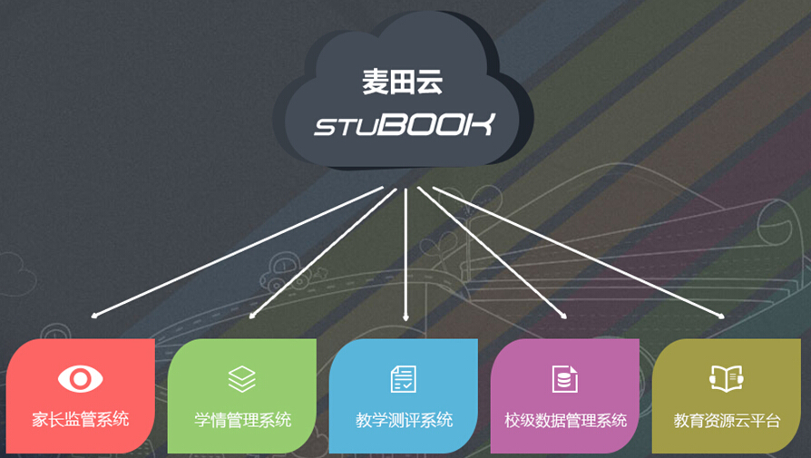
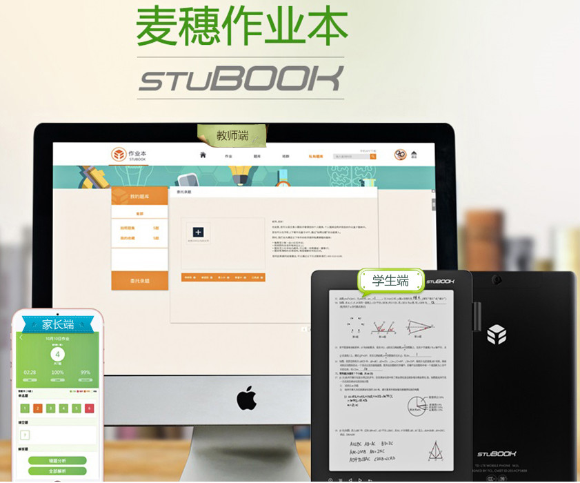
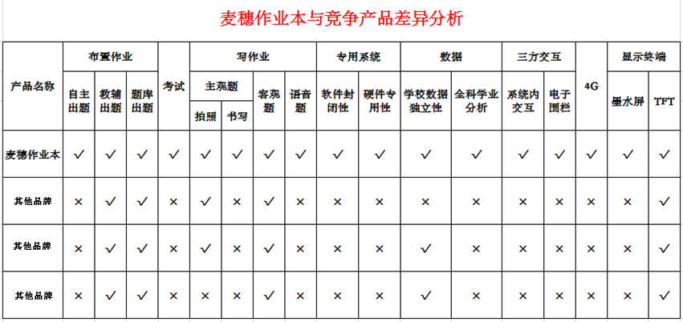

互联网的飞速发展颠覆了教育原有的体制与观念，教育发展需要改革已成为共识。教育部在《教育信息化十年发展规划(2011-2020年)》中提出要形成与国家教育现代化发展目标相适应的教育体系。2016年末，国务院印发了关于“十三五”国家信息科技发展规划，特别强调智能教育在教育中扮演重要角色，种种措施的出台为智能教育的发展提供良好的契机。
麦穗科技集团紧紧跟随国家教育发展趋势和政府宣导，充分发挥近三百名专业技术人员优势，在智能教育领域进行创新，研发和设计出包括7项受理中的知识产权(专利)和通过CTA、CCC、ROHS等14家权威机构安全认证的教育前端产品——麦田云智能教育平台，致力于采用最先进的教学模式和互联网手段辅以专业智能设备，对传统的教学模式进行创新、变革和重塑，让教学变得更加容易和高效，促进信息技术与教学深度融合。

麦田云智能教育平台基于互联网技术，依托大数据分析，以麦田云电子学习平板为载体，专注打造K12学生学情管理系统、教学测评系统、家长监管系统、校级数据管理系统、教育资源云平台等五大系统，用领先的智能教育解决方案，打造教学一站式服务平台。
麦田云智能教育平台能够提高师生之间的教学效率，极大缩短传统教学时间。同时加强教学链之间的联系，紧密链接校方和学生以及家长之间的高效沟通，积极打造学校、教师、家长、学生四方的互动与交流，更好的促进教学相长。
教学链中最重要的两端是教师与学生，麦田云智能教育平台研发人员全方位收集学生学习数据和行为数据作为标准样本，抓住关键点进行创新。目前教师在教学方面的主要难点表现在作业携带不方便;批改作业时间长，受时空限制;教学统计报告费时费力，语音题批阅繁琐等等。针对这些问题，教学评测系统教师端接入支持pc、手机、平板等媒介，方便教师随时随地的处理教学工作，提高教学效率，实现个性化教学。系统具有自动作业批改、自动生成学生知识点掌握情况及需要改进加强的内容等，使教学更加容易，更有针对性，达到提高教师素质和教学质量的双重目标。

学生在学习中的困惑有不敢开口问教师问题，经常忘带作业本，书包太重，不会自我总结等问题。拥有麦穗作业本后，学生作业不再需要纸质作业本和书写笔，给书包“减负”。同时系统可即时或定期提交学生知识点掌握情况，方便自己或教师、家长帮助其拾遗补缺，促使其更快提高学习成绩，树立学习自信心和积极性。
麦穗作业本伴随孩子的整个学习过程，很多家长可能会担心孩子频繁接触电子设备会对视力有影响。针对这个问题，麦穗作业本除配备9.7寸TFT-LCD显示器外，还提供能够保证最佳护眼效果的9.7寸E-ink电子墨水屏，电子墨水屏还具有耗电低的优点。在程序开发方面，麦穗作业本是一个封闭的系统，只有教学要求，没有游戏或网络的接口，使学生专注于学习本身，解除家长的后顾之忧，这些细节性的技术创新深受家长好评。

与其他教育产品仅仅关注教师和学生这两个教学关键点不同，除关注师生外，麦田云智能教育平台研发出家长监管系统让家长参与;校级数据管理系统确保校方管理层实时考核老师绩效、考查学生知识面掌握，还能加强与家长的沟通和交流，使整个系统形成一个闭合的管理体系，能够最大程度地调动教师教学的主动性和学生的学习自觉性，实现“教育无处不在，学习随时随地”的目标。